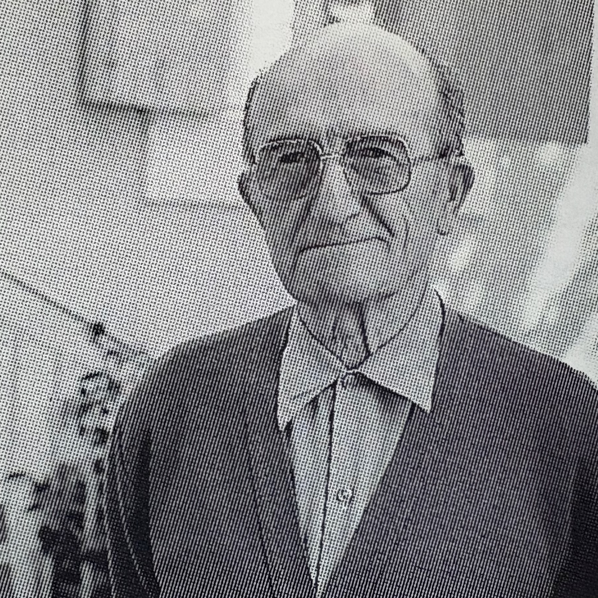
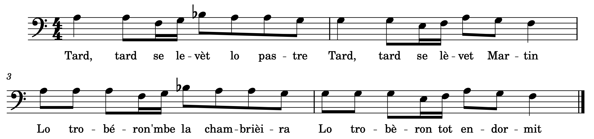

Base de données sémantique des chants traditionnels cévenols
Essayez : chants de bergers, complaintes d'amour, chansons de moisson
La recherche sémantique a analysé 342 chants et identifié les correspondances suivantes en recoupant paroles, thématiques et métadonnées de collectage.

Polka en ré mineur, mesure 4/4. Transcription d'après le collectage de Gabriac-Rousses (1997). Source : Conter, Chanter, Raconter — La tradition orale en Cévennes, n°241.

Tard tard se levèt lo pastre Tard tard se levèt Martin Lo trobèron embe la chambrieira Lo trobèron tot endormit
Tard tard se leva le berger Tard tard se leva Martin Ils le trouvèrent avec la chambrière Ils le trouvèrent tout endormi
Cette polka appartient à un répertoire de chansons de veillée pratiqué dans les Cévennes protestantes, où les bals publics étaient rares. La jeunesse se réunissait dans les hameaux pour des veillées de danse au trallala — c'est-à-dire en chantant, faute d'instruments. Les airs de danse servaient à la fois de support musical et d'aide-mémoire.
La polka Tard tard se levèt lo pastre est souvent entremêlée à la Teisson tira l'araire (n°240), polka très populaire sur presque tout le Massif central. Ces deux chants formaient fréquemment un seul couplet lors des veillées. La connotation grivoise du texte (le berger retrouvé endormi avec la chambrière) est typique du répertoire facétieux qui animait ces rassemblements.
Edouard Agulhon, berger à Gabriac-Rousses, est l'unique témoin de cet air en Cévennes. Le collectage, réalisé en septembre 1997 par P. Laurence, constitue un témoignage exceptionnel d'une pratique vocale en voie de disparition.
Source : Conter, Chanter, Raconter — La tradition orale en Cévennes, Castell-Coulomb & Laurence, 2016, t. II : 674. Recueilli auprès d'Edouard Agulhon.